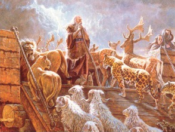

Nuh kutsal kitabın Yaratılış bölümündeki tufan hikayesinin baş kahramanıdır. Bu hikayeye göre, Tanrı bir gün dikkatle kainata baktı ve insanın işlediği günahları görünce çok kızdı. İnsanları yarattığı için pişman olarak hepsini yok etmeye karar verdi. Ancak bunu yapmadan önce Nuh’u fark etti.

Nuh masumdu ve Tanrı onu bu kesin yıkımdan kurtarmayı tasarladı. Nuh’a, yedi gün içinde kırk gün kırk gece sürecek bir yağmur yağdırarak azametli ve korkunç bir sele neden olacağını söyledi. Nuh’a kendisini, eşini, üç oğlu ile eşlerini ve var olan her hayvan türünden birer çifti (bir erkek, bir de dişi) alacak genişlikte bir gemi inşa etmesi talimatı verildi. Bu şekilde, Nuh yeryüzünde hayatı yeniden canlandırabilecekti.
Nuh hayvanları ve ailesini gemiye yükleyerek Tanrı’nın emirlerini yerine getirdi. Kırk gün sonra yağmur dindi, ama yer hâlâ sular altındaydı. Sular çekildiği zaman farkına varabilmek için Nuh bir pencere açarak dışarıya bir kumru yolladı.
Denizde geçen yüz elli gün ve Ağrı Dağı’nın tepesinde çakılıp kaldıkları yüz günün sonunda, toprak yeniden yeryüzüne yerleşilebilecek kadar kurumuştu. Nuh gemiyi boşaltarak hayvanları çiftleşmeye bıraktı. Daha sonra Tanrı, Nuh’a da, “Verimli ol ve üre” (Yaratılış 8:17), dedi. Ona bir daha insanları mahvetmeye kalkışmama sözü verdi ve bu sözleşmenin simgesi olarak bir gökkuşağı gösterdi.
Hıristiyan ve Yahudi tarihçilerle ilahiyatçılar Nuh hikayesini biraz farklı yorumlar. Hıristiyanlar için Nuh, Nuh’la ailesini kurtaran o güven ve itaatin de gösterdiği gibi Tanrı’ya olan ideal inancı temsil eder. Yahudi yorumcularsa gemiye giren son kişilerden biri olan Nuh’un gönülsüz bir inancı temsil ettiğini belirtir. Bu durum, inancının o kadar güçlü olmayabileceğini akla getirir. Farklılıklarına rağmen her iki gelenek de Nuh’u ve tufanı dini anlatıların önemli ifadeleri olarak görür.
EK BİLGİLER:
1. İncil’de şaraptan da ilk defa Nuh’un hikayesinde bahsedilir. Tufandan sonra Nuh sarhoş olur ve oğulları onu çıplak bir halde bulur.
2. Tanrı, Nuh’a verdiği “Verimli ol ve üre” emrini Âdem’le Havva’ya (Yaratılış 1:28) ve Yakup’a (Yaratılış 35:11) da vermiştir.